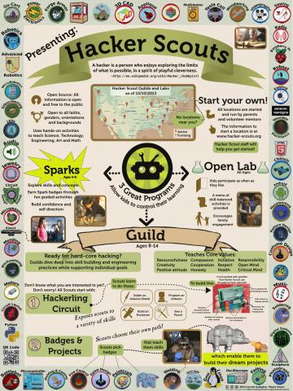

About Us
Curiosity Hacked is a national non profit organization, founded in the Fall of 2012 in Oakland CA, that focuses on STEAM (science, technology, engineering, art, and math) education, skill building and community engagement with the aspiration to help our children develop skills in the areas they are truly interested in, abilities that would allow them to dream big and create big.
Our mission
Curiosity Hacked is a non-profit, inclusive organization dedicated to addressing the needs of the global maker community through STEAM education and skill building. The Curiosity Hacked model provides knowledge, application, and retention of concepts and skills while supporting independence and interest. Our innovative open source programs promote learning through a variety of developmental and educational methods which prepare our children to adapt to new technology and give them the ability to achieve individual goals. Curiosity Hacked encourages the relentless pursuit of knowledge through relevant hands-on activities , mentorship, community and family engagement, and the development of a strong moral character and leadership skills through our core values.
Our objectives
- To prepare the next generation for a complex world through supporting creative innovation, the ability to adapt to new technology, and to value collaboration as well as sustainability.
- To give kids the opportunity to work with variety of experts and mentors from the community and ensure a well rounded and high level of attention and skill building for all ages through programs that meet the different needs of our young makers.
- To reach as many kids as possible and support them in building their own education through programs that are both accessible and affordable.
- To provide open source material and a support program for Curiosity Hacked programs globally.
Curiosity Hacked is fiscally sponsored by the School Factory, Inc., a 501(c)3 nonprofit organization.
FAQ
Curiosity Hacked is an inclusive, diverse, co-ed organization designed to support the next generation of makers, explorers, entrepreneurs, and leaders through an innovative program that blends creativity and technical skill through the study of science, technology, engineering, art, and math (STEAM). Every part of our organization is guided by the fundamental belief that children learn best when they are self-motivated and enthusiastic about a subject, when they have skilled mentors, and when the environment supports their social, emotional, and cognitive developmental needs. In Curiosity Hacked, kids have the opportunity to explore new concepts and skills, focus on their individual goals, and create community. This makes us unlike any other program. In a quickly changing world, Curiosity Hacked provides a relevant, consistent, well-rounded foundation of knowledge combined with an emphasis on values like resourcefulness, ingenuity, creativity, and persistance that will support our kid's ability to adapt to new technology, now and in the future. We have a vision of changing the way STEAM education is approached and taught, and we believe in accessibility and accountability. With Guilds forming all around the country, we are establishing a unique and collaborative community and making our vision a reality.
Why "Hacker" instead of "Maker"?The term "hacking" has a bad rap. Unfortunately, there are some who associate the term with illegal activity. Hacking is simply taking something- like an object or idea- and changing it to fit one's own need. Hacking is the improvement and modification of technology. Hacking is how we progress. At Curiosity Hacked, making isn't enough. We are hacking what education can look like. We are hacking activities so that families get the most information and skills out of them. We are hacking new thing out old things because it not only changes the way kids see the process of how things are built and used, but it changes their world view towards conservation and sustainability. We are taking back the word "Hacking"! Here is a great video about the term, the importance, and the potential of Hacking. Full disclosure: it features our talented Guild Leader Garratt Gallagher. Here is The Media Show: What is a Hacker? starring Mitch Altman and a puppet.
What ages do you serve?While most of our activities are targeted at the 8-14 year old range, all ages are welcome at Curiosity Hacked Open Lab. Because Open Lab is not a drop off program, parents and mentors are available to help modify projects for younger makers. The Guild has a lower age limit of 8. This is because the very first project they do is an Arduino Shield (circuit board) that requires soldering, learning circuitry vocabulary, designing enclosures, and more. The under 8 set tend to not have the focus or fine motor skills for this task quite yet! We also have a weekly program coming out in September for younger kids, ages 4-7.
Do you charge for your program?No, we do not charge to attend Curiosity Hacked. We do, however, charge material fees. These are based on the amount it cost us to create or buy and activity or kit, often as a substantial discount, which we pass along to you. Many Guilds actively fundraise to offer scholarships or subsidize their costs.
Are you affiliated with any other program?No. Curiosity Hacked is unique and independent in our approach and focus. We do, however, enjoy partnering and collaborating with other organizations when it fits our collective mission and larger goals.
Can anyone attend Curiosity Hacked Open Lab and Guild?Yes! Open Lab is a drop-in all ages program. No RSVP is needed. Guild is open to membership only, which is based on available openings and order of registration.
How can I start a Curiosity Hacked program in my area?We try to make the process of starting a Guild or Open Lab as easy as possible. The two most important components are leadership and location. Once we have determined who is going to be leading the Curiosity Hacked program, we usually have a phone conversation or Google Hangout where we go over our guidelines in detail and answer questions you may have. We can help in finding a location or reaching out to families in your area. Here is a link to our guidelines. When a program is ready to start, we provide an orientation and consistent support along the way. To learn more, please contact us at info@curiosityhacked.org